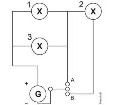

104. (ENEM 2014)
Um sistema de iluminação foi construído com um circuito de três lâmpadas iguais conectadas a um gerador (G) de tensão constante. Esse gerador possui uma chave que pode ser ligada nas posições A ou B.

Considerando o funcionamento do circuito dado, a lâmpada 1 brilhará mais quando a chave estiver na posição:
1) Chave na posição A: Lâmpadas 1 e 3 em paralelo, lâmpada 2 desligada. Resistência equivalente:
2) Potência total dissipada nesse caso:
3) Potência dissipada pela lâmpada 1 nesse caso:
4) Chave na posição B: Lâmpadas 1 e 3 em paralelo, em série com a lâmpada 2. Resistência equivalente:
5) Potência dissipada pela lâmpada 1 nesse caso:
Assinale a alternativa correta: